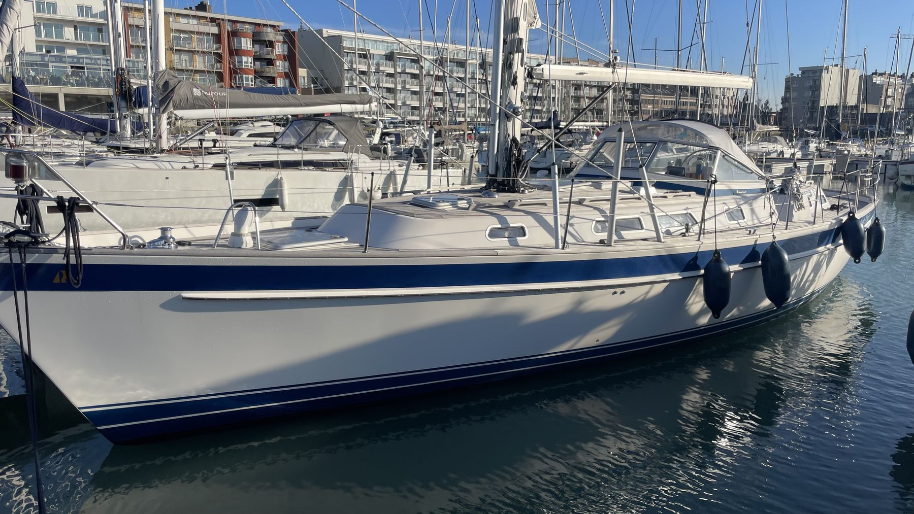

1 januari 2024
Eindelijk 2024
Om te beginnen wil ik al mijn zeil- en andere vrienden een fantastisch 2024 wensen. Uiteraard wens ik jullie allen een blakende gezondheid en daarnaast veel liefde, plezier en vreugde. Zon en wind moet ik jullie dit jaar niet wensen, want die zoeken we zelf op!
Na bijna 2 jaar plannen, is het eindelijk 2024, het jaar van de Grand Départ. Mijn eerste mail naar de meesten onder jullie met het zotte idee om aan dit project te beginnen is vandaag exact 2 jaar en 1 dag oud.
Nog 6 maanden van intensieve voorbereiding en Nomad kiest het ruime sop op 1 juli. De komende maanden zullen goed gevuld zijn met opleiding volgen, de boot verder upgraden & onderhouden, trainingtochtjes met alle crews en het launch event & feest.
Quel boulot, maar het ziet ernaar uit dat we flink op schema zitten. Er is nog een hele kluslijst, maar als er af en toe eens iemand een handje komt toesteken, geraken we er wel.
Het belangrijkste is dat er geen showstoppers meer zijn om aan de reis te beginnen. Alle etappes zijn gepland; en de crews ook en het lijkt alsof ze er zin in hebben, ook al is het voor sommigen nog meer dan een jaar wachten.
Ik ben super-excited, dit wordt een onvergetelijk avontuur!!!!